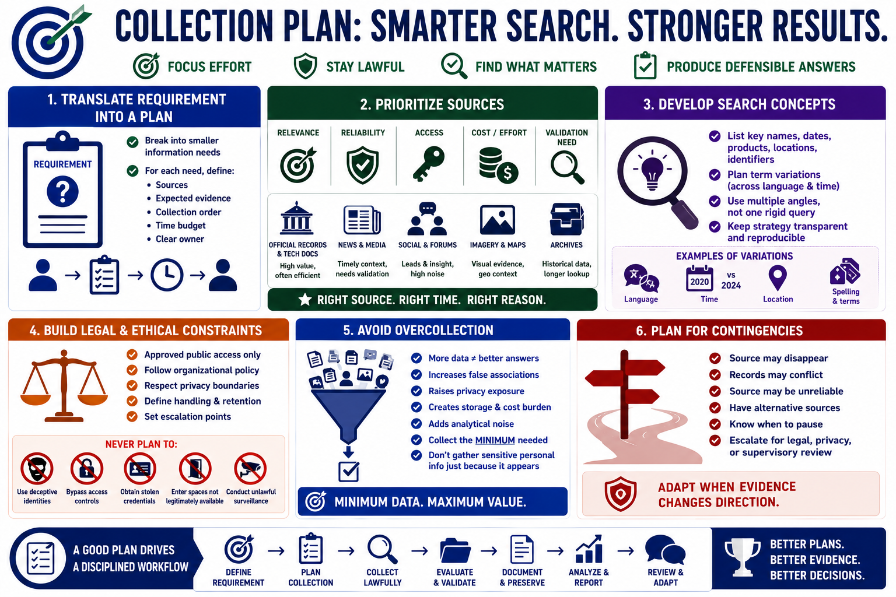

Plan the Collection
Connecting to LMS... Progress: in progress

Narration
A collection plan translates the requirement into source priorities and lawful search activities. Break the main question into smaller information needs. For each need, identify likely source categories, expected evidence, collection order, time budget, and a clear owner.
Prioritize sources by relevance, reliability, access, and cost. Official records or direct technical documentation may answer some questions efficiently. News, social sources, forums, imagery, maps, and archives may provide leads or context but often require more validation.
Develop search concepts rather than one rigid query. Record key names, dates, products, locations, and public identifiers that are necessary to the requirement. Plan how terms may vary across languages or time. Search strategy should remain transparent and reproducible rather than relying on unexplained intuition.
Build legal and ethical constraints into the plan. Document approved public access, organizational policy, privacy boundaries, handling requirements, and escalation points. Do not plan to bypass access controls, use deceptive identities, obtain stolen credentials, or enter spaces that are not legitimately available.
Avoid overcollection. More data can increase false associations, privacy exposure, storage burden, and analytical noise. Collect the minimum material needed to evaluate the requirement. Sensitive personal information should not be gathered merely because it appears in a result.
Include contingencies. A source may disappear, conflict with another record, or prove unreliable. Identify alternatives and specify when to pause for legal, privacy, or supervisory review. A good collection plan focuses effort while leaving room to adapt when evidence changes the direction.